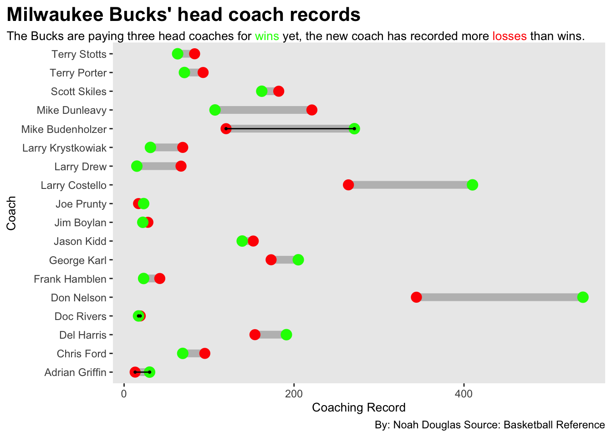

The Bucks are paying three coaches for the same result?
basketball
bucks
nba
Author
Noah Douglas
Published
May 2, 2024
The Milwaukee Bucks have an interesting challenge on their hands, keeping Superstar Giannis Antetokounmpo happy. The way to make Giannis happy however is through one thing – winning.
Giannis made it clear following the 2021 NBA Championship win that he wanted more titles. He understood that winning one title wasn’t enough and he is hungry for more. As Giannis is 28 and losing his prime years of athleticism, the Bucks are doing everything in their power to secure more opportunities at title runs. The first thing being the head coaching position.
However, after a stunning loss in the first round of the 2023 NBA Finals to the Miami Heat, the Bucks made the decision to let go of their NBA Championship winning coach in Mike Budenholzer. While Budenholzer often took a lot of scrutiny for lack of defensive adjustments and falling flat as the highest seed in the Eastern Conference, the Bucks made the change to go to rookie head coach, Adrian Griffin.
Code
library(tidyverse)library(ggrepel)library(ggalt)library(ggbump)library(ggtext)library(gt)library(patchwork)standings<-read_csv("rankingsbydate.csv")bucksplace<-standings|>filter(Team=="MIL")bucks<-read_csv("bucks.csv")playersgood<-read_csv("select24.csv")teamstats<-read_csv("teamstats.csv")buckscoaches<-read_csv("buckscoaches.csv")records<-buckscoaches |>group_by(Coach)|>select(Coach, W, L)|>filter(Coach=="Mike Budenholzer"| Coach=="Adrian Griffin"| Coach=="Doc Rivers")|>summarise(Wins=sum(W),Losses=sum(L) )coaches<-buckscoaches |>group_by(Coach)|>summarise(Wins=sum(W),Losses=sum(L) )ggplot()+geom_dumbbell(data=coaches,aes(y=Coach, x=Losses, xend=Wins),size=3,colour ="grey",colour_x ="red",colour_xend ="green")+geom_dumbbell(data=records,aes(y=Coach, x=Losses, xend=Wins))+labs(title="Milwaukee Bucks' head coach records", subtitle ="The Bucks are paying three head coaches for <span style = 'color:green;'>wins</span> yet, the new coach has recorded more <span style = 'color:red;'>losses</span> than wins.",caption ="By: Noah Douglas Source: Basketball Reference",x="Coaching Record" ) +theme(legend.position ="none",panel.grid.major =element_blank(),plot.title =element_text(size =16, face ="bold"),plot.subtitle =element_textbox_simple(size=10),axis.title =element_text(size =10), panel.grid.minor =element_blank(),plot.title.position ="plot" )

Meanwhile, the Bucks enjoyed a stunning successful stretch with their new coach at the helm. In Griffin’s time with the Bucks, they managed a 30-13 record and were in the race for first place in the East. With the offense clicking and the wins coming it seemed like the Bucks were ready to compete and make a run deep into the playoffs. However, Giannis felt this head coach wasn’t it. Along with other star players on the Bucks, there wasn’t a strong enough voice from Griffin leaving the players with enough confidence to sustain the success. Thus, the stunning move to fire Adrian Griffin was made.
Once Adrian Griffin was fired, the Bucks turned to veteran head coach Doc Rivers to lead the team to the playoffs. However, the journey wasn’t as easy as initially thought. The transition from the two coaches was rough as the offensive efficiency numbers fell and the defensive numbers only slightly improved.
The Bucks scuffled with Rivers at the helm and the Bucks snuck their way into a three seed in the playoffs, the lowest they had been in the previous four seasons. Doc Rivers led the Bucks to a 19-20 record the rest of the way. Griffin had the Bucks firmly in second, meanwhile the Bucks bounced around after Rivers arrived.
However, the Bucks also made a major move along with hiring Adrian Griffin in the 2023-24 off season. The Bucks traded for star point guard Damian Lillard. Lillard and Giannis combining were expected to become a dynamic duo, however, that was simply not the case.
The shot efficiency for Giannis skyrocketed in a historic offensive season for him in 2024, however, Lillard was affected by the new coaching style. Along with another big-time player in Khris Middleton, getting healthier, the Bucks had a core group that was ready to compete.
However, the player drop offs were noticeable. Lillard’s efficiency dropped, the absence of Jrue Holiday being traded away hurt the Bucks, and even injuries later in the season effected the the Bucks. Regardless, the Bucks were better in 2024 with offensive efficiencies showing how Adrian Griffin may be was the right head coach for the Bucks after all.
Code
players23<-read_csv("playerstats23")select23<-players23|>filter(Player=="Jrue Holiday"| Player=="Giannis Antetokounmpo"| Player=="Khris Middleton"| Player=="Jayson Tatum"| Player=="Damian Lillard"| Player=="LeBron James"| Player=="Jaylen Brown")|>mutate(Season=2023)|>select(Player, `FG%`, PTS, MP, G, Season)selectgood24<-playersgood|>filter(Player=="Jrue Holiday"| Player=="Giannis Antetokounmpo"| Player=="Khris Middleton"| Player=="Jayson Tatum"| Player=="Damian Lillard"| Player=="LeBron James"| Player=="Jaylen Brown")|>mutate(Season=2024)|>select(Player, `FG%`, PTS, MP, G, Season)selectplayers<-bind_rows(select23, selectgood24)selectplayers|>arrange(desc(`FG%`))|>gt()|>cols_label(`FG%`="Shooting Percentage",PTS ="Points Scored",MP="Minutes Played",G="Games" )|>tab_style(style =list(cell_fill(color ="#00471B"),cell_text(color ="white") ),locations =cells_body(rows = Player =="Giannis Antetokounmpo"))|>tab_style(style =list(cell_fill(color ="#00471B"),cell_text(color ="white") ),locations =cells_body(rows = Player =="Khris Middleton"))|>tab_style(style =list(cell_fill(color ="#00471B"),cell_text(color ="white") ),locations =cells_body(rows = Player =="Damian Lillard") )|>tab_header(title ="The Bucks' star players had noticeable differences between the two seasons.",subtitle ="Each of the star players from the Bucks had major differences between the different coaches. However, the big trade didn't benefit the Bucks like it should have." ) |>tab_style(style =cell_text(color ="black", weight ="bold", align ="left"),locations =cells_title("title") ) |>tab_style(style =cell_text(color ="black", align ="left"),locations =cells_title("subtitle"))|>tab_source_note(source_note =md("**By:** Noah Douglas | **Source:** Basketball Reference") )
The Bucks' star players had noticeable differences between the two seasons.
Each of the star players from the Bucks had major differences between the different coaches. However, the big trade didn't benefit the Bucks like it should have.
Player
Shooting Percentage
Points Scored
Minutes Played
Games
Season
Giannis Antetokounmpo
0.611
2222
2567
73
2024
Giannis Antetokounmpo
0.553
1959
2024
63
2023
LeBron James
0.540
1822
2504
71
2024
LeBron James
0.500
1590
1954
55
2023
Jaylen Brown
0.499
1610
2343
70
2024
Khris Middleton
0.493
828
1487
55
2024
Jaylen Brown
0.491
1784
2405
67
2023
Jrue Holiday
0.480
860
2263
69
2024
Jrue Holiday
0.479
1290
2183
67
2023
Jayson Tatum
0.471
1987
2645
74
2024
Jayson Tatum
0.466
2225
2732
74
2023
Damian Lillard
0.463
1866
2107
58
2023
Khris Middleton
0.436
497
801
33
2023
Damian Lillard
0.424
1775
2579
73
2024
By: Noah Douglas | Source: Basketball Reference
The Bucks found out the hard way that firing a head coach mid-season is not a recipe for success. The Bucks later lost in the first round to the Indiana Pacers and while Dame was hurt at points in the series and Giannis didn’t play at all, Rivers was not the coach for the job. It became clear that either sticking with Coach Budenholzer or riding it out for the entirety of the season with Griffin would have been a better move.